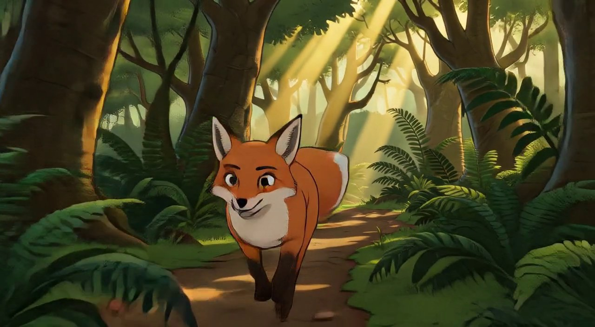
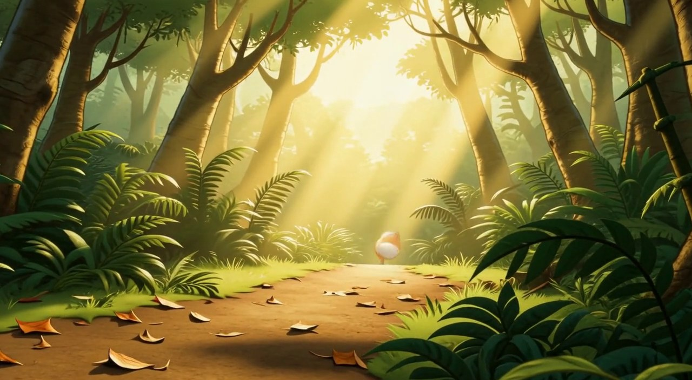
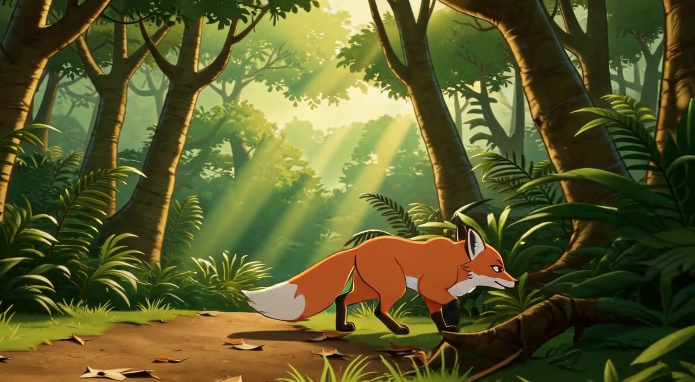
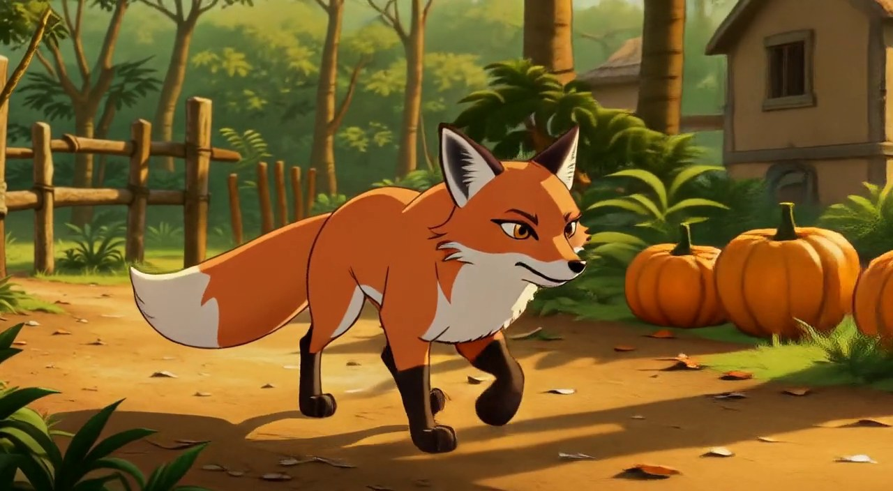
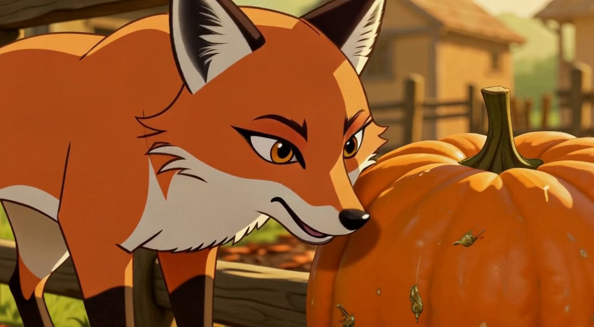
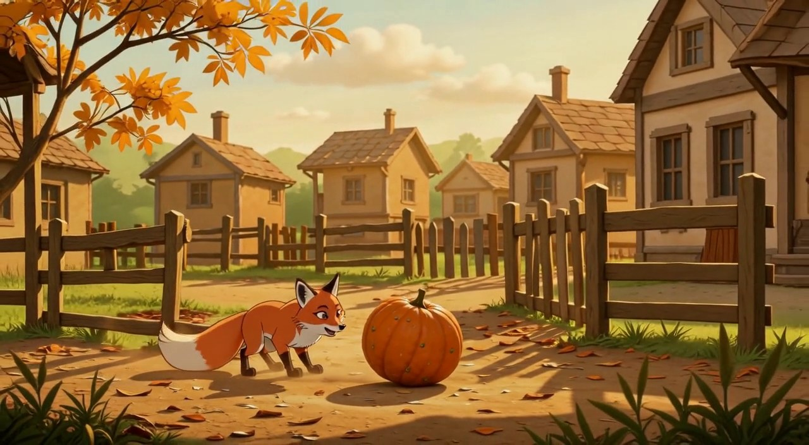
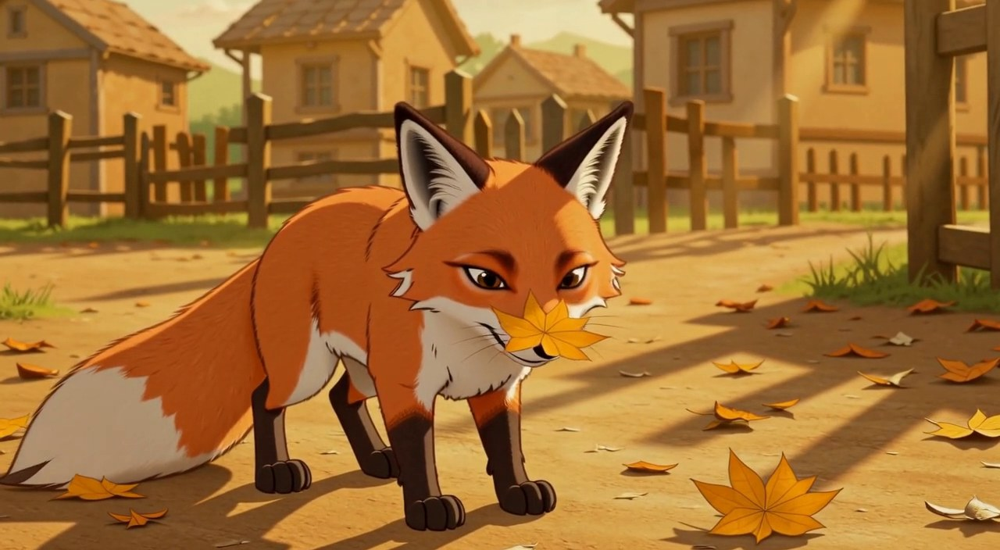
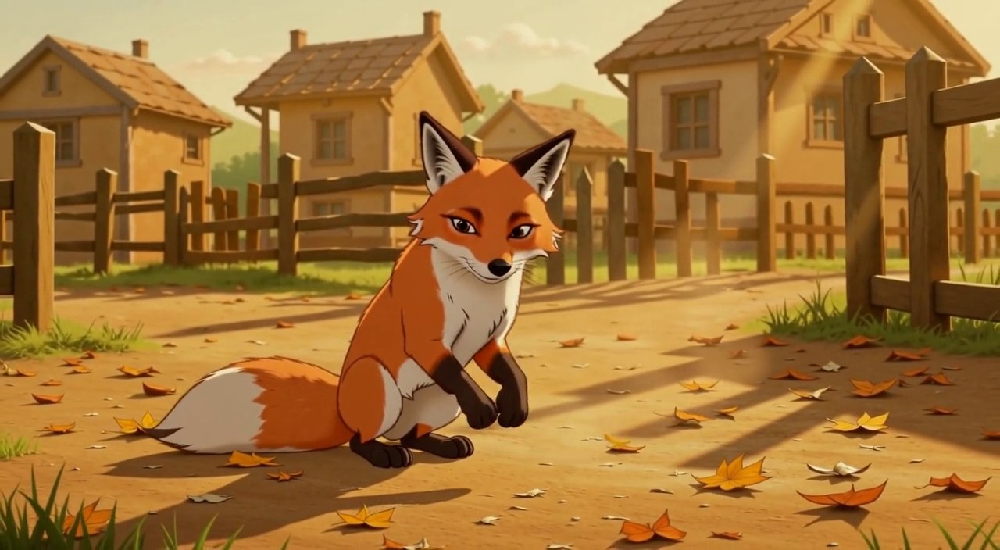
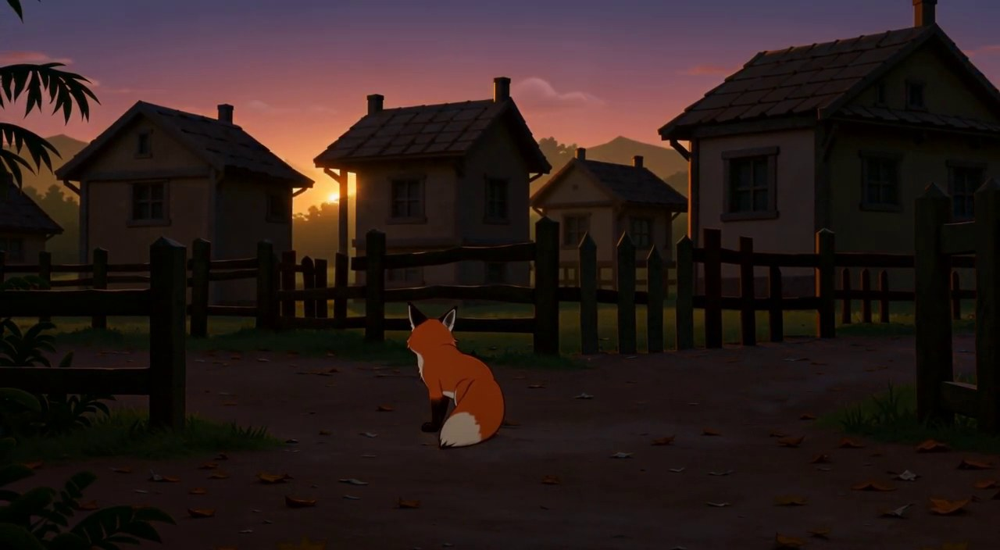

清晨放晴的雨林小径，阳光比清晨雾天更亮。狐狸沿小径向画面深处轻快奔跑，忽然远处传来公鸡打鸣声，它耳朵猛地竖起，脚步加快，穿行于树干与蕨叶之间，镜头侧面跟拍
狐狸在小径中段加速奔跑，身体朝向画面深处，耳朵前竖，四足离地或落地皆可
-
continue — a2:主体可见/环境/风格/负面约束全部修复；残留=狐狸朝镜头跑而非朝深处（预期朝深处）。叙事命中机位偏→accept+adapt（N4先例），M2预编剧首句冲刺跃倒木自带方向重建可吸收，不再烧重试
4b58934c05820bb8

狐狸全力冲刺，纵身跃过倒伏树干，落地不停继续向前，冲向小径尽头越来越亮的开口，镜头从背后低机位跟随
狐狸落地后仍在向深处奔跑，背对镜头，前方树影渐稀透亮
55.6
无
continue — a1:叙事方向命中（背对镜头朝亮处奔）、环境命中、无fauna；偏离=机位极远景狐狸占比~4%（预期中景跟随）+跃倒木未证实（新SIV板无倒木）。MAE55.6主因构图剧变（近景朝镜→远景背影+强光）。判据：叙事命中机位偏→accept+adapt，M3中景构图+首句减速停步可吸收
f24ad3823f137646

小径尽头树木渐稀，前方透进刺眼的明亮。狐狸在雨林边缘的阴影里减速停步，眯起眼睛打量外面的亮光，前爪还踩在落叶上，尾巴微微摆动，迟疑又好奇
狐狸站在雨林边缘树影里，面朝画面深处的明亮外界，姿态停定
46.6
continue — a2:ECU修复为全身中景侧面；情绪恢复谨慎好奇；雨林光柱环境命中。残留=潜行未停定（动作端点未落，N2/N5同类）+朝向右前倒木而非正对亮开口。判据：叙事命中端点未落→accept+adapt，M4首句深吸气跃出可吸收；开口参考现含全身+环境，可进主测镜
7b283ffee363972d

狐狸深吸一口气，从雨林边缘一跃而出，冲进正午阳光下的小村村口：脚下变成土路，两侧是木栅栏，路边一片橙色南瓜地，远处干草垛和茅草顶小屋。它冲过村口土路猛地急停，爪下扬起一小片尘土，回头看一眼来路的树林，再转回头打量村庄，村子空无一人
狐狸站在村口土路中央，身后是雨林边缘树影，面前是木栅栏与南瓜地，正午阳光，尘土未定
59.6 （跨Location接力，预期偏高）
continue — 跨Location接力主测点成立：村庄identity完整渲染（土路/栅栏/南瓜/小屋/正午光），森林背景零残留，狐狸全身中景进村，身份无漂移，无fauna。偏离=急停+回头端点未落（尾帧行走中，N2/N5同类accept+adapt）。MAE59.6高值=环境剧变（雨林→村庄）基线数据点。M5首句压低身子挪近可吸收
88d213e1917f6b68

狐狸压低身子，沿着木栅栏小心挪近南瓜地，在一只有它半个身子大的橙色大南瓜旁停下，伸头低头嗅闻，尾巴平伸保持平衡
狐狸在大南瓜旁低头嗅闻，姿态压低，尾巴平伸
47.6
continue — a2:南瓜恢复+鼻尖凑近嗅闻叙事核心成立，电线杆/瓦顶漂移消失。机位偏近一档（头+南瓜近景双人镜头式）但对M6顶南瓜是理想开口；尾巴平伸被裁切不可见；smirk表情第3次复发（吸引子数据点）不构成叙事反转。continue
bfbfa6b27837161a

狐狸伸鼻顶了顶南瓜，南瓜晃了晃、滚出小半圈停住。狐狸吓得弹开半步，弓背压低盯住南瓜，尾巴炸起，南瓜旁扬起一点尘土
狐狸弓身后退半步盯着静止的南瓜，尾巴垂落，尘土微扬
55.3
continue — 情绪反转数据点：吓得弹开→开心play-bow（smirk吸引子第4变体，模型对狐狸+物体交互强先验）。与N6-a1区别：机位/地理/道具全成立且兴奋态与M7追叶衔接更顺，N9先例表明强先验retry无效→accept+adapt。南瓜静止落地、秋季感漂移读作relay携带的fable氛围
a1b32ba11d39206e

一阵风卷起几片金黄落叶绕着狐狸打转，狐狸兴奋地追着落叶原地转圈跳跃，最后一跃扑空落地，落叶悠悠飘散，其中一片恰好落在它的鼻尖上。狐狸猛地僵住，眼睛斜向下盯着鼻尖上的叶子，一动不动
狐狸四足站定，一片黄叶停在鼻尖上，眼睛斜向下看，姿态僵住
56.3
continue — 多体接触精度打点一次命中：黄叶真实贴在鼻尖（非邻近滑落），眼睛斜向下盯叶、四足站定、表情专注无smirk、环境一致。对比第一轮N7蝶落尾尖滑至蕨叶——接触目标更大（叶>蝶）+freeze收势指令时接触可命中，接触精度极限非系统性不可能。vision判none本次经亲验属实
3cacfc79a253e1fc

狐狸打了个小喷嚏，鼻尖的叶子飘落。它甩甩头，端坐下来舔了舔前爪，午后暖光把它的毛染成暖金色，村子安安静静
狐狸端坐在土路上，尾巴环过前爪，神态放松，午后暖光
39.4
continue — 端坐+午后暖金光+长影子命中（光照渐进如期落地），神态放松无smirk。残留=尾巴铺身侧未环前爪+前爪微抬风格化小怪异。MAE39.4本链最低之一。M9首句暮色小跑自带起身动作可吸收
95ac4e73503e53b8

暮色降临，影子拉长。狐狸沿土路小跑回雨林边缘，在树影前停步，回头望了一眼沉入黄昏的安静村庄，剪影小小的停在明暗交界处
暮色大远景：狐狸小剪影停在雨林边缘树影前，身后村庄沉入黄昏
92.7
continue — 收官镜：暮色渲染绝佳（紫橙天空+落日+剪影化村庄），狐狸小剪影收束意象完整。残留=预编剧小跑回雨林边缘+回头望端点未落（实际坐姿面朝村庄落日）——最终镜无下镜吸收需求，收束叙事成立。MAE92.7=构图剧变（暖金近景→暮色大远景）
5ce04680593219ff